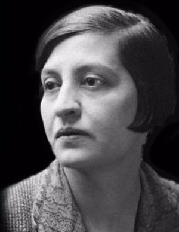
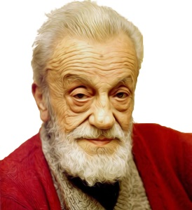
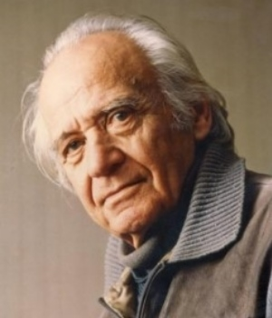
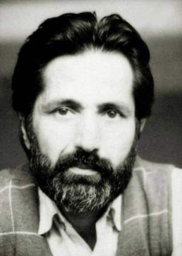
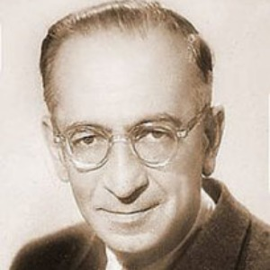
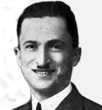
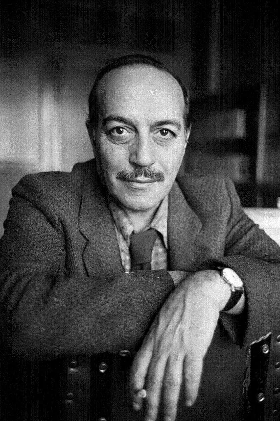
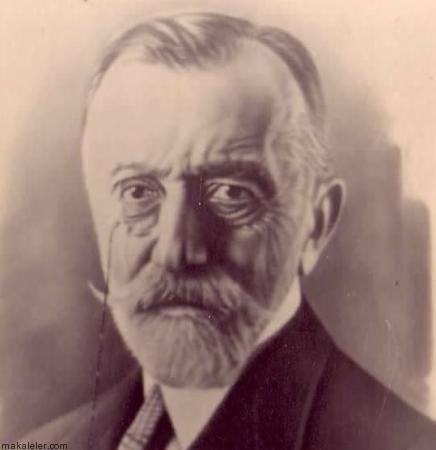

Eflatun Cem Güney

Malatya’nın Hekimhan ilçesinde dünyaya geldi. Henüz çok küçük bir çocukken, hem anne hem de babasını kaybetmesi nedeniyle 1903 yılında amcasının yanına Sivas’a taşındı. Eflatun Cem Güney, Sivas’a yerleştikten sonra öncelikle Sivas Fevziye İbtidaisi’ne kaydoldu, burada başarılı bir şekilde eğitim gördü ve mezun oldu. Ardından Sivas İdadisi ve Sivas Sultanisi’nde öğrenimine devam etti (Emiroğlu 2005). Tamamı İçin Tıklayınız
Halide Edip Adıvar
Halide Edip Adıvar (d. 1884 - ö. 9 Ocak 1964), Türk yazar, siyasetçi, akademisyen, öğretmendir. Halide Onbaşı olarak da bilinir. Halide Edip, 1919 yılında İstanbul halkını ülkenin işgaline karşı harekete geçirmek için yaptığı konuşmaları ile zihinlerde yer etmiş usta bir hatiptir. Kurtuluş Savaşı'nda cephede Mustafa Kemal'in yanında görev yapmış bir sivil olmasına rağmen rütbe alarak savaş kahramanı sayılmıştır. Savaş yıllarında Anadolu Ajansı'nın kurulmasında rol alarak gazetecilik de yapmıştır. Tamamı İçin Tıklayınız
Necip Fazıl Kısakürek
(26 Mayıs 1904, İstanbul - 25 Mayıs 1983, İstanbul), Türk şair, yazar ve düşünür. Necip Fazıl Kısakürek, 26 mayıs 1904'de İstanbul'da doğdu. Maraşlı bir ailenin tek çocuğu olan Fazıl'a 'Ahmet Necip' adı verildi. 1934 tarihinde bir Nakşî şeyhi olan Abdülhakîm Arvâsî ile tanıştı. 1941 yılında Fatma Neslihan Balaban ile evlendi. Bu evlilikten beş çocuğu oldu. Tamamı İçin Tıklayınız
Rıfat Ilgaz
Mehmet Rıfat Ilgaz, (7 Mayıs 1911; Cide, Kastamonu - 7 Temmuz 1993, İstanbul), Türk şiir, roman ve öykü yazarıdır. Rıfat Ilgaz 82 yıllık yaşamına bir çok eser sığdırmıştır. Özellikle Hababam Sınıfı romanıyla tanındı. Hem yazılarında hem de kişisel hayatında toplumcu bir çizgi devam ettirdi. Türkiye'nin en çalkantılı siyasi dönemlerinde devam ettiği dergiciliği, aynı dönemdeki birçok yazar gibi, onun da adliye koridorlarında ve hapishanede zaman geçirmesine neden oldu. Oldukça üretken olan yazın hayatına şiirden mizah öykülerine, romandan çocuk kitaplarına birçok farklı alanda eser sığdırdı. Bir zamanlar toplatılan Karartma Geceleri eseri 2004 yılında 100 Temel Eser listesine girdi. Tamamı İçin Tıklayınız
Abdurrahman Cahit Zarifoğlu
Çocukluğu Siverek, Maraş ve Ankara'da geçti. İstanbul Üniversitesi Edebiyat Fakültesi Alman Dili ve Edebiyatını bitirdi. Diriliş dergisinde şiirleri yayımlandı. Arvasilerden, Seyyid Kasım Arvasi'nin kızı Berat Hanım'la evlendi ve bu evlilikten üç kız, bir erkek evladı oldu. Nikahında şahitliğini Necip Fazıl Kısakürek yapmıştır. 1973 yılında Sarıkamış'ta vatani hizmetine başlamış, 1974 yılında Kıbrıs Barış Harekatı'na katılmış ve 1975 yılında askerliğini tamamlamıştır. 1976 yılında Mavera dergisinin kuruluş çalışmalarında yer aldı. 7 Haziran 1987 tarihinde akciğer kanseri hastalığından İstanbul'da vefat etti. Kabri Üsküdar Beylerbeyi'ndeki Küplüce Mezarlığı'nda ve kayınpederi olan Kasım Arvasi ile yan yanadır. Her sene 7 Haziran'da sevenleri tarafından mezarı başında anılır. Tamamı İçin Tıklayınız...
Peyami Safa
Peyami Safa (2 Nisan 1889 - 15 Haziran 1961) Türk yazar ve gazeteci. Dokuzuncu Hariciye Koğuşu, Matmazel Noraliya'nın Koltuğu ve Yalnızız gibi psikolojik türdeki eserleriyle Cumhuriyet dönemi Türk edebiyatında ön plana çıktı.
Yaşamı ve fikrî hayatındaki değişimlerini eserlerine de yansıttı. Server Bedi takma adıyla birçok roman kaleme aldı. Cingöz Recai tiplemesini Fransız yazar Maurice Leblanc'ın Arsen Lüpen karakterinden esinlenerek yarattı. Aynı zamanda çeşitli kurumlarda gazetecilik mesleğini sürdürdü ve ağabeyi İlhami Safa ile birlikte Kültür Haftası gibi çeşitli dergiler çıkardı.
Tamamı İçin Tıklayınız...Reşat Nuri Güntekin
Reşat Nuri Güntekin (25 Kasım 1889, İstanbul - 7 Aralık 1956, Londra), Cumhuriyet dönemi edebiyatında önemli bir yeri olan Çalıkuşu, Yeşil Gece ve Anadolu Notları gibi eserlere imza atmış roman, öykü ve oyun yazarıdır.
Müfettişlik görevi ile Anadolu'da gezdiği için Anadolu insanını yakından tanımıştır. Eserlerinde Anadolu'daki yaşamı ve toplumsal sorunları ele almış; insanı insan-çevre ilişkisi içinde yansıtmıştır. Tamamı İçin Tıklayınız...
Cemal Süreya
Cemal Süreya (1931, Pülümür, Tunceli - 9 Ocak 1990, İstanbul), Türk şair ve yazardır. Asıl adı Cemalettin Seber'dir.
1931 yılında o dönem Erzincan'a bağlı olan Pülümür'de doğdu. Babasının ismi Hüseyin, annesinin ismi ise Gülbeyaz'dır. Çocukluğunun ilk yıllarını Erzincan şehrinde geçirdi. 1938'de Dersim İsyanı sonrasında ailesi Bilecik'e sürgün edildi. İlkokula İstanbul Beyoğlu'nda başlayan Süreya üçüncü sınıfta Bilecik'te eğitim hayatına devam eder. Daha sonra babasına haber vermeden parasız yatılı sınavına girer ve Haydarpaşa Lisesi'ni kazanarak oradan mezun olur. Ankara Üniversitesi Siyasal Bilgiler Fakültesi maliye ve iktisat bölümü'nü bitirdi. Maliye Bakanlığı'nda müfettiş yardımcılığı ve müfettişlik, darphane müdürlüğü, Kültür Bakanlığı'nda kültür yayınları danışma kurulu üyeliği, Orta Doğu İktisat Bankası yönetim kurulu üyeliği ve 25 yılı aşkın Türk Dil Kurumu üyeliği görevlerinde bulunmuştur. Yayınevlerinde danışmanlık, ansiklopedilerde redaktörlük, çevirmenlik yaptı. Tamamı İçin Tıklayınız...
Abdulhak Hamit Tarhan
Abdülhak Hamit Tarhan, Türk şair, oyun yazarı, diplomattır. Osmanlı İmparatorluğu'nun son döneminde ve Cumhuriyet Türkiye'sinin ilk yıllarında eserler vermiş, modern edebiyatın doğuşunda etkin bir isimdir. 2 Ocak 1852’de İstanbul’da doğdu. Hekimbaşı Abdülhak Molla'nın torunu, tanınmış tarihçi ve Tahran Büyükelçisi Hayrullah Bey'in oğlu. Kısa süre Rumelihisar Rüşdiyesi’ne devam etti. Yanyalı Tahsin Hoca ile Edremitli Bahaeddin Efendi'den özel dersler aldı. 1862’de 10 yaşındayken ağabeyi ile birlikte Paris’e babasının yanına gitti. Bir süre Paris'te eğitim gördükten sonra 1864'te İstanbul'a döndü. Yaşının küçüklüğüne rağmen Bab-ı Ali’de tercüme odasına katip olarak girdi. Bir yıl sonra Tahran Büyükelçiliği’ne atanan babasıyla birlikte İran’a gitti. Farsça öğrendi. Babasının 1867’de ölümü üzerine İstanbul’a döndü. Maliye Mühimme Kalemi’ne girdi. Şûra-yı Devlet ve Sadaret kalemleri'nde çalıştı. 1871'de Fatma Hanım'la evlendi.1876'da Paris Büyükelçiliği İkinci Katipliği'ne atandı. Tamamı İçin Tıklayınız...